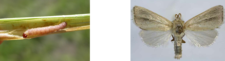

| Home |
| PEARL MILLET |
| 1. shoot fly |
| 2. Stem borer |
| 3. pink stem borer |
| 4. grain midge |
| 5. stink bug |
| 6. leaf beetle |
| 7. black hairy caterpiller |
| 8. wingless grasshopper |
| 9. semilooper |
| Questions |
| Download Notes |
PESTS OF PEARL MILLET :: Major Pests :: Pink Stem Borer
3. Pink stem borer: Sesamia inferens (Noctuidae: Lepidoptera)
Distribution and status: India, Pakistan, Malaysia, Taiwan, Burma, Bangladesh, Sri Lanka, South East Asia, China, Korea, Japan and Indonesia.
Host range: Sorghum, maize, rice, wheat, sugarcane, bajra and ragi, barley, guinea grasses
Damage symptoms: Pink larva enters into the stem causing dead heart symptom.
Bionomics: The adult moth is a straw coloured moth with white wings. The larva is pinkish brown with dark head. The life cycle is completed in 45-75 days. There are 4-6 generations per year.
